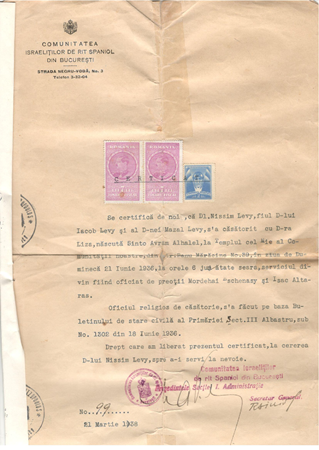
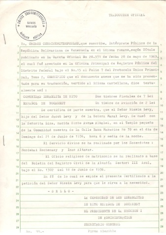
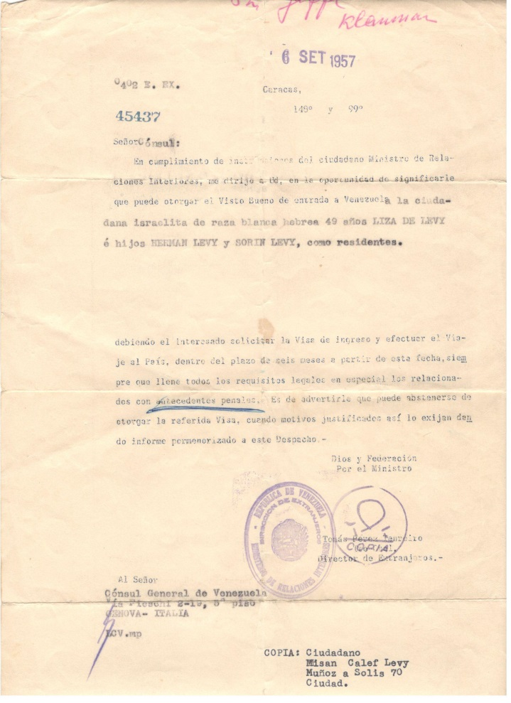
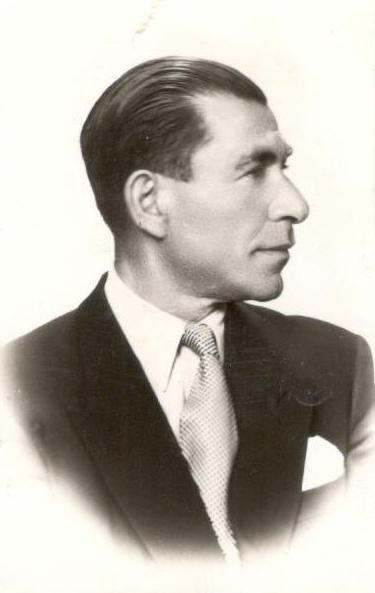
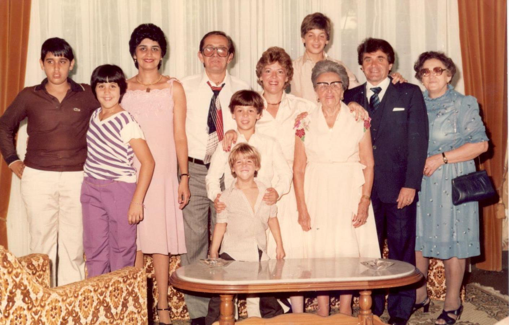
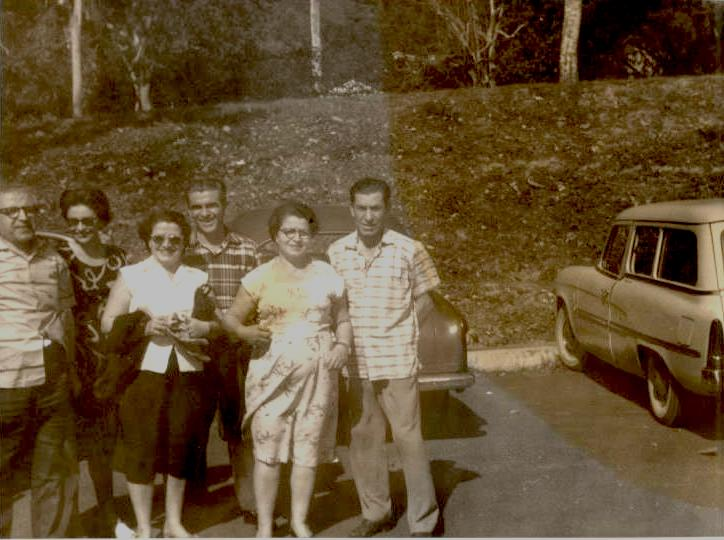

Ancestros de mi abuelo Nico
Mis tátara abuelos Yaacov Levy y Mazal Aljadish, los dos nacidos en Salónica, Tuvieron 5 hijos:
Nissim (mi bisabuelo), Buca (Maijor), quien tuvo a Enriette (Reti), que vive en Tel Aviv, Israel. Signora, quien tuvo a Olga, Salomón, quien murió joven y Yuli, quien no tuvo hijos.
Los dos se mudaron a Rumania donde fueron dueños de un casino y lograron hacer mucha plata. Este casino era el negocio de toda la familia, era el Casino de Sinaya en Bucarest.
Mi Bisabuelo Nissin se casa con Liza Abramoba de Bulgaria y tuvieron a Herman (Tzvi) quien nació el 6 de abril 1937 y a Salomón nacido el 5 de abril de 1944. Al año de su nacimiento se escaparon dejando todo atrás (solo se quedaron con los documentos de la casa, pensando regresar algún día y reclamar lo que les pertenecía). Llegaron a Israel y se establecieron en una Maabara (pueblo de tránsito en el que vivían en carpas) Ellos vivían en tal grado de pobreza que deciden enviar a Nico a vivir a un Kibutz en el norte de Israel, llamado Mizra. Al cabo de un tiempo se mudan a Haifa y mi abuelo comienza el ejército.
La hermana de Nissim, Signora y su esposo Micu, se mudan a Caracas (desconocemos las razones por la que se dirigen a este país), luego llegan Yuli y su esposo Jean y se traen a mi bisabuelo quien llega en el año 1956. Mi bisabuela Liza se queda en Israel para no dejar a su hijo mayor, quien justo se encontraba luchando en la Guerra del Sinaí.
En el año 1958 llegan a Venezuela Liza y sus dos hijos. Nissim fue primeramente Buhonero. Al poco tiempo de la llegada de su esposa e hijos él fallece, en el año 1960, dejando a Liza viuda en un país extraño. Ella y sus hijos viven en San Bernardino y siempre trabajó con mi abuelo Nico, sin embargo vivió con su hijo Salomón hasta su muerte en el año de 1995.
Mi papá nunca conoció a su abuelo paterno y de su abuela tampoco cuenta mucho, pues dice que no había tanta relación. La recuerda siempre siendo una señora muy mayor. Tiene en su memoria una anécdota en que ella se quedó a dormir en su casa porque sus padres estaban de viaje y durmieron los tres juntos en la cama (La abuela, Niso (el hermano mayor de mi papá) y él y que ellos habían hecho una travesura y ella los iba a castigar y empezaron a correr y ella los persiguió y había una mesa redonda en el comedor y se encontraron los tres corriendo alrededor de la mesa. También recuerda que cocinaba muy bien.

1 Acta de matrimonio original y su traducción al español, de mis bisabuelos Nissim y Liza Levy

2 Permiso de entrada a Venezuela para mi bisabuela Liza, mi abuelo Nico y su hermano Salomón. Firmado el 6 de septiembre de 1957.

3 Mi bisabuelo Nissim

4 Mi familia Levy; de izquierda a derecha: Mi tía bisabuela Juli (Hermana de mi abuelo Nissim), mi abuelo Nico, Su mamá (mi bisabuela Liza), mi tío Niso, mi abuela Sarina, mi papá y tío Jimmy, mi tío Salomón (hermano de mi abuelo Nico), su esposa, mi tía Mery y los primos hermanos de mi papá: Rebeca y Nissim (hijos de Salomón y Mery)

5 Mis ancestros Levy ya en Caracas. De izquierda a derecha: mi bisabuelo Nissim, Signora (hermana de mi bisabuelo) Jean (su cuñado) Juli (hermana de Nissim y esposa de Jean) Olga (prima hermana de mi papá) y el papá de olga y esposo de Signora; Micu.